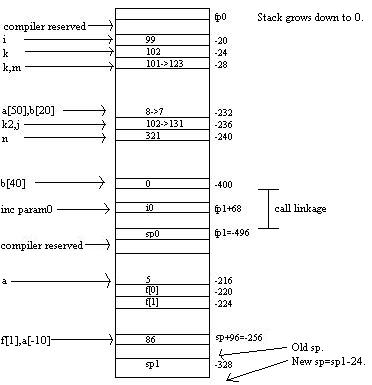
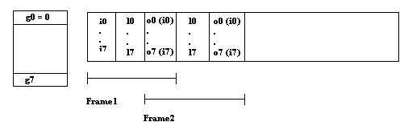

Living on the StackIf you ever plan to do some serious C hacking, it really helps to understand where the compiler is putting things. So, I ran a few experiments to figure out how gcc (3.2.1) is allocating memory. I just happen to be on a Solaris Sparc machine; so, you're going to learn a little about sparc architecture too. Don't accept any of this as gospel. This is just what I figured out one night reading the resources below and toying with gcc. The c code is rather nasty looking, but don't worry, I'll go over it. Then I'll go over the assembly, which you can get by typing 'gcc gcctest.c -S', a few lines at a time.Take a look at the main function. I'm declaring variables everywhere. These are all allocated and assigned on the stack when the function executes. After the i and k are assigned, you see
{
int k=101, a[50],k2=102;
a[0] = 8;
inc(k+1);
}
This is a local scope. There are no loop or if statements. It just means anything declared here only exists until exiting the scope. Notice I can declare another k, which is not the same as the previous k. It is put in its own position on the stack. The rest of main is fairly straightforward. The inc function does some ugly stuff. The first statement below initializes an array of two pointers. The first points to 10 integers allocated off in heap land. The second points to a place on the stack. The alloca function just increases the stack size and gives back a pointer. Unlike malloc, the memory does not have to be freed because this happens automatically when the stack is restored. Then elements 3 and 5 pointed to by f[0] are assigned 88 and 87. The 0 element allocated on the stack is assigned 86. If you run this code, you'll find that the value of a[-10] is *(f[1]). I'll explain this later. However, don't ever try this. It won't work on a different compiler or machine.
int *f[2]={(int*)malloc(10*sizeof(int)),
(int*)alloca(5*sizeof(int))};
*(f[0]+3)=88;
*(f[0]+5)=87;
*(f[1]+0)=86;
free(f[0]);
printf("%d %d\n",*(f[1]),a[-10]);
Below is a representation of the stack after inc executes. Keep it in mind during the following discussion. The addresses on the right are relative to the current frame pointer. Remember, the stack always grows down. The save instruction decrements the stack pointer (sp) and slides the register window (more about that later). Then 99 is put on the stack at -20, 102 is put at -24, and 101 is put at -28. Next it jumps all the way to -236 to store 102. Then the first element of a, 8, is put at -232. This is 50*4 bytes below where k=101 was placed. For whatever reason, the compiler chose to assign k2 at -236 before a[0]. The k from the inner scope is loaded from -28 into out register o0, incremented, and then inc is called. Obviously, o0 is a used as a parameter to inc. Notice that there is a NOP after call. This is because the branch actually takes an extra cycle to occur. save %sp, -496, %sp !#PROLOGUE# 1 mov 99, %o0 st %o0, [%fp-20] mov 102, %o0 st %o0, [%fp-24] mov 101, %o0 st %o0, [%fp-28] mov 102, %o0 st %o0, [%fp-236] mov 8, %o0 st %o0, [%fp-232] ld [%fp-28], %o0 add %o0, 1, %o0 call inc, 0 nop Now the first really interesting behaviour occurs. The next variable declared, back in the outer scope, is put in -236. This is where k2 was. But we've left that scope. So the compiler feels free to clobber it. Then m is put at -28, clobbering inner k. Notice that the space where a was declared has not been touched yet. The compiler is waiting for another array. This happens with b. The first element, b[0], is placed over a[0]. mov 131, %o0 st %o0, [%fp-236] mov 123, %o0 st %o0, [%fp-28] mov 321, %o0 st %o0, [%fp-240] mov 7, %o0 st %o0, [%fp-232] The if statement is next. First, b[0] is loaded into a register and compared to 6. If it's equal, fall through. Notice again the NOP because of the branch. The register g0 is a global register. And it's always zero. So 0 goes into the new b[0] at -400. Since the new b was declared as 40*4 bytes, it won't fit in the remaining space where a once was and where the other b is now. Last inc is called on 0. This if statement is never true. The compiler would probably optimize it away if I had turned on optimization. What's interesting is that all the stack space for all the variables was allocated at the start of the function regardless of what code actually executes. That is, once the save instruction executes, the stack frame has been set, and it takes into consideration every variable, whether it is used or not. Thus b[0]=0 never happens, but the space for b is there anyway. However, some variables may simply take the place of variables previously declared in a local scope instead of getting new stack space.
ld [%fp-232], %o0
cmp %o0, 6
bne .LL3
nop
st %g0, [%fp-400]
mov 0, %o0
call inc, 0
nop
The end of main calls inc on outer k+1. Then it returns inc of i. The MOV instruction moves the out register, o0, into the in register, i0. The out register holds the output of the inc function. The in register holds the output to the function that called main. Last, notice that ret is called before restore. That way the stack is repaired in the extra instruction of the branch. .LL3: ld [%fp-24], %o0 add %o0, 1, %o0 call inc, 0 nop ld [%fp-20], %o0 call inc, 0 nop mov %o0, %i0 nop ret restore You're probably wondering by now what's going on with the in and out registers. Sparc machines use a sliding register window. The first eight registers are in (i0-i7). Then next eight are local registers for use by the function. The last eight are the out register. In addition, there are eight global registers that all functions share. When you call the save instruction, the window slides over 16 registers. Thus, the out registers become the new function's in registers. And it gets new local and out registers. This is why the first in register, o0, is used as a parameter to inc. It sees o0 as in0. The stack pointer is stored in o6 and the frame pointer is in i6. So after save, the frame pointer is now the old stack pointer. | ||
|  | ||
|
Next is the inc function. First, the stack moves down a whopping 496 bytes. The input argument is placed 68 bytes above the frame pointer. This is actually in the stack space of the calling function. At all times the calling function has to reserve some space for in, out, and local registers for a function call that may occur (or in case a trap occurs). So, the copy of i0 placed at fp+68 was allocated by main. More about this later. The last two instructions store a[0] at -216. save %sp, -328, %sp !#PROLOGUE# 1 st %i0, [%fp+68] mov 5, %o0 st %o0, [%fp-216] Now 40 bytes are sent to malloc, which returns a pointer to an integer. This pointer is stored at -232. The next instruction moves 24 into o0. This 24 is the 5 integers to be allocated by alloca. But it has been double word aligned; so, it's 24 instead of 20. Then the stack pointer is decremented by this amount. The next few instructions add 96 to the stack pointer and store it at -228. I'm not sure why 96 was calculated in such a funny way. It appears to be some kind of double word alignment technique. But that's just a guess. Notice that even though alloca is just declaring memory on the stack, it actually changes the stack size. (However, the behaviour might be different on another machine or compiler.) In that sense it's a function, but there was no function call. So it seems to have been inlined. mov 40, %o0 call malloc, 0 nop st %o0, [%fp-232] mov 24, %o0 sub %sp, %o0, %sp add %sp, 92, %o0 add %o0, 7, %o0 srl %o0, 3, %o0 sll %o0, 3, %o0 st %o0, [%fp-228] The ldd instruction loads the memory at -232 and -228 into o0 and o1 respectively. The std instruction moves o0 and o1 into -224 and -220. This will be f[0] and f[1] respectively. Why it was stored temporarily at -232, I'm not sure. The MOV instruction after moves 12 (or 3 integers) into o1. This is added to the pointer stored in f[0] to retrieve the address of *(f[0]+3). Then 88 is stored at this address. Similarly, the next several instructions store 87 and 86. If you look back at the diagram of the stack, you won't see 87 or 88. That's because they were placed on the heap - the memory allocated by malloc. ldd [%fp-232], %o0 std %o0, [%fp-224] mov 12, %o1 ld [%fp-224], %o0 add %o1, %o0, %o1 mov 88, %o0 st %o0, [%o1] mov 20, %o1 ld [%fp-224], %o0 add %o1, %o0, %o1 mov 87, %o0 st %o0, [%o1] ld [%fp-220], %o1 mov 86, %o0 st %o0, [%o1] The address of f[0] is loaded and passed to the free function. The address of f[1]is loaded into o1. Then the address of the string at .LLC0 is loaded into o0. And the address of a[-10] is put in o2, followed by a call to printf. The remaining instructions load the input from fp+68, add one, store in o0, restore the stack, and return. The return address is stored in i7. It jumps to the position after the NOP. The return value was put in i0. This will be in o0 when the window moves back 16 registered. This should make sense if you were paying attention to the assembly instruction call at the end of main.
st %o0, [%o1]
ld [%fp-224], %o0
call free, 0
nop
ld [%fp-220], %o1
sethi %hi(.LLC0), %o0
or %o0, %lo(.LLC0), %o0
ld [%o1], %o1
ld [%fp-256], %o2
call printf, 0
nop
ld [%fp+68], %o0
add %o0, 1, %o0
mov %o0, %i0
nop
ret
restore
So I finally get to talk about a[-10]. Since f[1] points to the stack and a is on the stack, it's simply a matter of looking at the assembly and calculating the offset from a[0] to *(f[1]). To get this, subtract the extra 24 bytes allocated on the stack from the first 328. Then add 96. The answer is the offset from the frame pointer, which is 40 bytes below the address of a[0] (or -216). Then there are 16 bytes (or 4 integers) between the end of the alloca array (remember the extra 4 bytes) and the start of a. These bytes are where f was stored temporarily and where it's stored now. The reason that 96 was added to the stack earlier was to make sure that we kept that call linkage area allocated. Since the stack pointer moved, it had to be recalculated. And the memory pointed to by f[1] was placed right on top. If you understood all that, you should have a pretty good idea of where things are being put in memory. And you should now understand that you can get some temporary space by using a local scope. Of course, there's no telling what the compiler might do if you turn on optimizations. You should also know that it's never ever safe to return a pointer to memory you declare in a function. That memory is on the stack. Once you exit, it doesn't belong to you and it's only a matter of time until another function call squashes it. Always use malloc. Or pass a pointer to memory declared by the calling function. Also, you should be careful about how much memory you declare on the stack. Stacks like to crash into heaps. And you probably won't get a warning. You should use malloc for large arrays. And not all compilers will let you declare arrays on the stack.
Resources: | ||